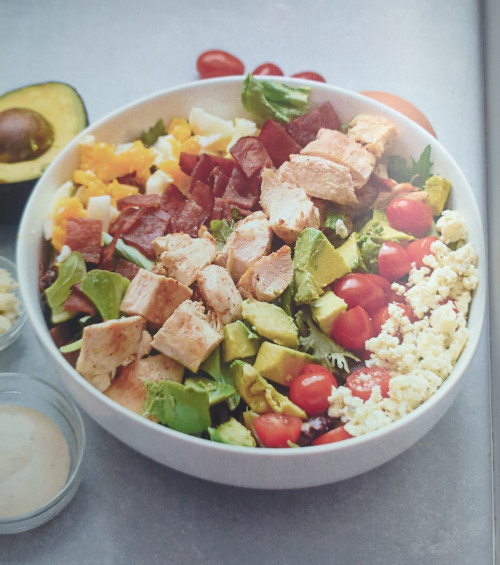

Home
Cobb Salad
This recipe was taken from "Keto Diet Cookbook" by Dr. Josh Axe

Ingredients
- 4 cups spring greens
- 2 cooked boneless, skinless chicken greasts, cut into 1-inch pieces
- 4 piece of turkey or beef
- 1/2 cup cherry tomatoes, sliced
- 1/4 cup blue cheese crumbles
- 2 hard-boiled eggs, sliced
- 1/2 avocado, sliced
- 4 tablespoons avocado ranch dressing
Directions
In a large bowl, combine all the ingredients, except the dressing,
until well mixed. Divide between two bowls.
Top with 2 tablespoons of avocado ranch dressing, or to taste, and serve.
Make it dairy free
Omit the blue cheese crumbles.